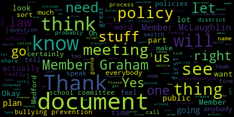
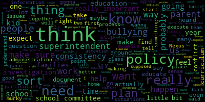
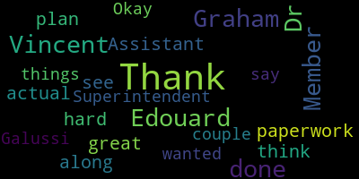

[Ruseau]: It is 4.32 on Tuesday, December 6th, and the Rules and Policy Subcommittee meeting will come to order. The meeting tonight will be, I'll just read the whole posting. Please be advised that on Tuesday, December 6th, 2022, from 4.30 to 5.30 p.m., there will be a Rules and Policy Subcommittee meeting held through remote participation via Zoom. The meeting can be viewed through Medford Community Media on Comcast Channel 15 and Verizon Channel 45 at 4.30 p.m. Since the meeting will be held remotely, participants can log on or call in by using the following link or call-in number. The Zoom link is https://mps02155-org.zoom.us 954-099-31345. If you wish to call in, you can call 1309-205-3325 with a meeting ID of 954-099-31345. Let's see. Additionally, during the meeting, If you would like to submit a question or comment, you can email me directly at pruseau at medford.k12.ma.us. Please include your first and last name, your Medford Street address, or if you're an employee, please indicate that, and your question or comment. So the agenda for tonight, as approved by the committee on January 24th, 2022, the Rules and Policy Subcommittee will review the bullying prevention and intervention plan for recommended updates. I will take the roll call. Member Graham?
[Clerk]: Here.
[U1EIl_L-LWc_SPEAKER_00]: Member McLaughlin?
[Clerk]: Here.
[Ruseau]: And Member Ruseau, present, three present. We have a quorum. So this is a, The audience has had a chance to look at this document it's quite large, and it contains an awful lot of stuff that probably does not need to contain. work going tonight. I had a receipt of a suggestion that if there was anybody here who wanted to speak on parts of this bullying prevention and intervention plan, if there's anything in it that you specifically think we need to focus on, I figure we would get that get your feedback to start rather than at the end. My guess is that we will need more than one meeting for this. It's such a substantial document. And so without further ado, if anybody wants to raise their hand and provide any specifics about what you'd like us to be doing with this bullying prevention and intervention plan, Any particular weaknesses or strengths do you think we need to focus on? That would certainly be helpful. And that includes the administration, obviously, school committee members, and any of the public as well. Member McLaughlin.
[SPEAKER_06]: Thank you. I just want to make sure folks have the plan. Where can they locate it?
[Ruseau]: Yes, I'll put it in the chat in a second. Thank you.
[SPEAKER_06]: And everyone has access to the chat to be able to access the plan.
[Ruseau]: You asked questions. Let me see. I'm not sure. Let me just first grab the document and then I will see.
[Cushing]: Yes. Anybody who is a viewer will get the message as long as it's broadcast to all.
[U1EIl_L-LWc_SPEAKER_00]: So there is the Google document. It is available from our website under students and families.
[Ruseau]: And in the dropdown, there's bullying, cyberbullying and internet safety.
[U1EIl_L-LWc_SPEAKER_00]: And it is the first link in that page that displays.
[TjgvMpuq30w_SPEAKER_11]: And also, Member Ruseau, just for the audience to know that this particular plan was approved in 2010, originally by the committee, and revised in August of 2014, and then just most recently revised in November of 2020.
[Ruseau]: So I know that it's hard to be the first person to speak. Oh, we got somebody. If you could just include your name and address. Yeah, your name and your address for the record. Peter, do I have to click ask to unmute?
[Cushing]: I just did it.
[Ruseau]: Okay, thank you. Hello.
[SPEAKER_08]: Hi, it's Nicole Branley. I can't give my address. And it's saying I can't start my video because the host has disabled it. So just so you know.
[Ruseau]: Okay, thank you. Peter, welcome.
[U1EIl_L-LWc_SPEAKER_00]: Peter, is there something with the video that? Nope, I can do it right now. Thank you. Good to go. All right, let's see.
[Ruseau]: There we go. I like being able to see people. Thank you.
[SPEAKER_08]: Thank you for that. Sorry, is it too bright, too dark? I couldn't get on the laptop. So we're trying everything here. It's fine. So I just wanted to say that I've read this multiple times and I think the thing that really took my breath away about it is that it wasn't followed in my case for my daughter. I have never seen this bullying incident report form. And I think when I saw this, it kind of caught me off guard that I didn't even know that this existed. I mean, I don't think there's anybody on here that doesn't know our story at this point. So I think that that was, you know, it took my breath away. And I know from the documentation that I have from the communications from the superintendent and from the principal that a bully investigation was never done. So I think everything that I've read in the actual plan is great, but we can have all the plans and all the rules and all the policies. And I think I've said this 8 million times, we can have all of these things, but if we're not following through, it all means nothing. And so, you know, I've highlighted some things in here. I don't want to be the only one that talks the only time because, you know, you all deserve a voice, but we have fallen under many of the categories here that are the definition of bullying.
[UM6Hbf_Z6LM_SPEAKER_09]: And so, I think it was very hard to see that there's actual paperwork that should have been done all along.
[SPEAKER_08]: We have incident reports, but that is being reactive in our situation. And maybe if some of this paperwork was done initially with some of our complaints, that maybe we wouldn't be on our fourth police report at this time.
[UM6Hbf_Z6LM_SPEAKER_09]: So the plan is great, but it has to be done.
[SPEAKER_08]: So I think, in my case, and I think that I've probably been the most vocal person about everything that's happened to our child. But there are other people out there that I'm sure have had terrible things happen. And where do they end up too? So it's not just about me. It's not just about my daughter. This is a big picture. So I just wanted to make sure that that was stated. And obviously, like always, I am more than willing to help. and do anything I can for the future of our city, for my daughter's future, for, you know, Medford means a lot to me. Medford High means a lot to me. My daughter means the most. So, you know, I think it was just sad to see this form and know that it was never a plan. You know, there was never an investigation. There was never a bullying form filled out until the day my daughter was attacked. the nurse wrote something out. By then, we were already at the emergency room. So I just want to make sure that that is stated. And I'm sorry, my dog keeps barking, of course. But I just want to make sure that that's noted.
[Ruseau]: Thank you, Nicole. And certainly, once we get some opportunity for people to speak, The contents of the document, a lot of it surprised me as already being there. But I will let others speak. Member McLaughlin.
[SPEAKER_06]: Thank you. It's good to see the amount of people here tonight and folks that are able to speak up. It's appreciated. I think that there's some work to do in this area for sure. And this is something that you know we've experienced personally in our family and over the years I've been supporting families that have experienced. Similar scenarios. So I think the documents a lot to digest, I will say that it's a lot for a family to sit down and read. It's a lot for probably an educator or administrator, even though you know we know it's their job to also sit down and read. So I, one of the off the top recommendations that I would have and I want to put out there is that you know, me, the visual learner, I talk about this a lot, right? Having a visual flow chart, you know, sort of image that is shared, what to do if, you know, if this, then that, what happens, what the process is and sort of a visual, you know, one page sort of chart that can help families and everybody understand what this process is and what happens. In middle school, we had a similar experience. I did not know anything about a bullying report form. Although we had gone to the principal at the time, just not a principal who's here with us any longer, but it was some time ago, but did not know anything about this, except for the fact that our CPAC, our Special Ed Parent Advisory Council, had a training on bullying. And at the time the special education director Kathy Medaglio came and helped give the training and that was when I learned that there was a bullying report form that was required to be filed in that training. And that was training for parents to be clear, professional training for parents to understand so that's the other thing I think really needs to happen in terms of I know this professional development. I'm sure there's professional development that will be coming out as a result of recent events, but also as a result of this document. And I want to ensure that there's also family training around this. And this was something that we had asked for specifically at the time as well, back in middle school, that there be some sort of, you know, they said there was an annual presentation in the auditorium or that they brought outside vendors in around this, but it was not really, you know, that I was aware of really fully understood or explained to parents. And I think it's something that should be happening regularly so that families can understand what their rights are and what the processes are. So in summary, I would say one, a lot to digest. Two, I really recommend a visual for also just for our families who have language barriers, a visual support and one that is translated to one page. visual support and one that's translated for our families, and three, that there be training offered for our families in addition to our professional development for staff. Thanks.
[Ruseau]: Thank you, Member McLaughlin. Member Graham?
[SPEAKER_05]: Thank you. A couple of things stood out to me.
[Graham]: I totally agree with Member McLaughlin, that this document is really undigestible in its current form. And so, I don't know, it checks some boxes, but I don't think that's what we're here to do. So I wanna make sure that we can get to a better place. I think as I was doing a little bit of research, the school committee does not have a bullying policy. This plan is really supposed to be, I think, owned by the superintendent and the administration, which I am fine with. So I think out of this work has to come an actual policy by the school committee that can then help inform the plan to implement the policy and execute the policy on a consistent basis. And I would tend to agree that this is one of those things like picking your health plan that you don't pay any attention to until you need it. And I use that example a lot because you can't predict if you're gonna need a chiropractor this year, if you've never needed a chiropractor before, right? And so when you pick your plan. You don't say, what kind of chiropractic coverage does this plan offer me? Because it's just not even in your purview to understand. And so what happens then when the need arises, you have to educate yourself really quickly. And you are often like surprised and maybe disappointed at times, depending on what your choice was, about what you find as you try to educate yourself. And I think, when families find themselves in this position, some of the things that I have heard thematically are questions around consistency, are questions around I didn't know or who was supposed to tell me, so I think people really feel at a loss when this happens to them and they're trying to educate themselves quickly that there is a really quick and easy way to sort of get educated. And so as we think about sort of like bifurcating the policy from the plan and certainly the professional development that needs to happen, I think we also do need to think about what are those one-pagers. And I think we have to get on a cadence of hosting regular forums about what bullying means. Because I think the other thing that you hear happening in the community is, that at each and every sort of altercation that you have that's unpleasant, everyone is making assessments about is or is that not bullying. And, you know, we need to get to a place where we can educate the public with some consistency about what the definition of bullying really is. Because I don't think I don't think our residents are willfully ignorant, I think they want to know and I think it's really hard for them to figure this stuff out because they don't speak school and they don't come to school every day to be educators right so. we need to sort of help bridge the gap with families as we do that. And I think this is like one of many topics where I think we could do more to help families feel educated and empowered. But I think in this particular case, we need to find a way both in our policy and in our plan to insist on and require absolute consistency in how we handle these incidents when they come up. Because I think that consistency is really important. I think lack of consistency leads to all kinds of problems, including under-reporting, people looking the other way, people with the best of intentions. And I think we have heard this in commentary here and there that, you know, reporting things doesn't really do anything. I have heard that from students, and I want to make sure that on a very consistent basis, we can make sure that people know that we are, A, we have a policy, and B, that we are following it. And hopefully see that leads to better outcomes, right, because that's why we're doing this. So I do think, you know, as we go through this work, we probably need to try to focus first on the school committee policies so that the administration can then do their work in terms of lining up the The plan and the visuals and we probably need to work together on the parent education side of things, because I feel like that is a realm that is a little bit more squishy about, you know. whose responsibility it is, I think that's a collaborative effort would really make a lot of sense there. But I think we're probably gonna have to take it one step at a time. And I think along the way, I wanna encourage people to speak and share their experience, but just ask people to be really cautious about disclosing specific student situations with us all. This is being recorded. I just want to put that out there. I just want to make sure that we're all sort of mindful that that is a really important thing for us to do as we do this work to try to protect all the kids in the mix too. Thank you.
[U1EIl_L-LWc_SPEAKER_00]: Thank you very much. Mr. Downs. Did we just lose Mike? He went to unmute himself. Oh, there you are.
[SPEAKER_14]: Sorry about that. Sorry about that. So, you know, I've been an administrator when the bullying law first came out. And one of the things I'm going to piggyback what member Graham said is that people need to be a little educated on what's the difference between conflict and bullying. And if we can make that part of the training that you two members have now mentioned about with the community, that would be helpful because oftentimes there is a large disparity between a conflict and what actually constitutes bullying. And if you look at our our bullying intervention plan, it does outline what bullying is, but maybe if we can add to whatever one page sheet or whatever it may be, what is conflict? Because a lot of the times it is conflict. Kids are going to be in conflict from K through 12. And sometimes, you know, we get, you know, we're the ones that do tease that difference out. But if people can be more aware of what that might be, And secondly, in some of the things that we cannot control, and I'll give you the biggest thing is anything anonymous online. We know when people come to us to solve this anonymous issue, we had a page on a social media website last year that we cannot find who it was, no matter what we do, because we're not tech people. I think education would help us a long ways because if we're bottled down with things that are simple conflict, you know, we won't want to take away from the actual cases of bullying because bullying is serious. If it is actually bullying, it takes a long time. You know, we take a long time investigating every person who is there, every person who is mentioned as a potential witness. So, you know, we want to be able to have that time to focus on those things. So thank you for your time. Appreciate it.
[Ruseau]: Thank you. Member Graham, is your hands just up? Cause it's still up. Thank you.
[Graham]: No, I actually did just want to respond to something Mike said. I think it's a really good point that there is a difference between conflict and bullying and that we probably do need to start to create some language and some words from a consistency perspective around those two ideas. But I think the other thing we need to really be thinking about as we do that is Is there a progression from conflict to bullying, and I think the answer is probably sometimes. And I think the question that we are going to have to answer procedurally for the administration is how do we make sure that we are. being proactive enough in conflict that we aren't allowing situations to like turn into bullying situations and issues. So I think that's sort of one thing that is really important for us to think about as we like explore this like educational space. The other thing that that you said that sort of resonated with me is we take a long time to investigate these issues and I think, again, from an education perspective, we need people to understand what those investigation steps are and what a reasonable timeline is to expect for these things to unfold. And I fully expect everybody who has to actually execute those investigation steps to push back hard on the notion of like relative timelines. But I do think in the big scheme of How we sort of move the collective forward like we need to give people some some sort of like understanding of what that framework is. And, but I think also in the context of that i'm really interested in making sure that, while these investigations need to be thorough. they do need to be sort of as swift as they can possibly be so that there aren't like escalating issues going on while the investigation is happening. And I would like for us at some point to talk about what are the like parent communication expectations when somebody is in like this process of an investigation and how can we make sure that the families as they are going through this feel supported even in the reality that they will probably never be satisfied with the information that we can share with them. I think that's a reality but I don't think that precludes us from helping families feel supported along the way and I think we have to figure out how we do that and what the models are that again allow us to do that with consistency but those are the things that I I was thinking about as you were talking and I, but I could not agree with you more that this education space is super important. And even, you know, using this topic as a place to talk about curriculum, I think is a huge opportunity because I don't think know, parents don't know what the curriculum is. I think people go to curriculum night and they get like, you know, a very short spiel about a lot of topics. And there, you know, there is and is going to continue to be changed, but curriculum around this and an approach that our school system takes when these things happen and how we are teaching kids conflict resolution that I think in this context would really help people like glue all those pieces together. That I think would be really beneficial.
[U1EIl_L-LWc_SPEAKER_00]: Thank you, Member Graham. As anybody who does know me knows I have plenty I can say. Oh, Mr. Tucci.
[Tucci]: Hi, good evening, everyone. I just wanted to speak, if I could, to a little bit of proactive work that we do oftentimes with our students and staff. Over the course of the beginning of the school year, we are mandated in order to engage our staff members in a bullying training to make sure that they are fully in the know as to what constitutes bullying and steps they need to follow and are mandated to follow by law. in order to report bullying and any concern of that to school administration so that we can conduct the investigation and go through all the steps that are needed to go through. In addition, we are really proactive with regards to helping to engage our students and help them understand through some character education, bullying, prevention education, through the use of assembly, school assemblies, the use of our guidance, our wellness classes, the use of building a lot of this information in through other means to help students understand what bullying is and how they can go about reporting an issue to trusted adults. Of course, a lot of our intentional work in social emotional learning and developing relationships with students in doing a lot of the restorative circles that we've begun to do to as well, certainly bode well in helping us get ahead and be proactive with regards to addressing these types of issues as they you know, kind of arise from that standpoint. You know, we like to be visible and out there and have the pulse of our student body, communicating, collaborating, and trying to prevent any type of issues like this taking place. But of course, anytime there's an issue that, you know, does arise, we want to make sure that we're, you know, responsive, communicative with parents, and really collaborative in problem solving and following the process that we need to follow in order to maintain a really good environment. One final thing I'll note is that, uh, I'm really encouraged by the work that we're about to do. With the Sandy hook promise as, um, we're about to roll out, say something, which is another way that we can, uh, try to invite, you know, people to report and, uh, be, um, you know, not a bystander, but an upstander. If they see something or, uh, that they, that they perceive as being wrong, they can report it in these anonymous type of fashions. And I know that we're looking forward to rolling out this new program. with our school communities in the next few weeks. So I just want to chime in on that and certainly happy to answer any questions too as well. Thank you.
[Lungo-Koehn]: Thank you. Dr. Edouard-Vincent.
[TjgvMpuq30w_SPEAKER_11]: Yes, good evening, everyone. I also wanted to just piggyback on what was just being shared about some proactive measures at the lower grade levels. We have students that participate during the first six weeks of school. We do the responsive classroom. And over the course of the year, we also have the Nexus classrooms, where during those sessions, the students learn about the color coding for behavior controls and yellow and red and how are they feeling and green and blue and being able to identify how it is that they feel. And so some of those things, skills that are taught during those earlier grades, help the students come up with other strategies when they realize and they can identify their feelings in terms of If they're feeling happy if they're feeling sad. So those are like the early building blocks, as you progress and move on to middle school. They have the what I need blocks, and I know a lot of. team building and circles restorative circles are some of the proactive measures that are used at the secondary levels 612 in different capacities. But I just wanted to say some of the things that are done to help students be better regulated and I didn't know if that. if any of the secondary or elementary administrators wanted to weigh in either on responsive classroom or nexus or restorative circles that help students become better regulated.
[Ruseau]: Yes, I don't know who said may I?
[SPEAKER_06]: Oh. It's Member McLaughlin.
[Ruseau]: Hi, Member McLaughlin, yes.
[SPEAKER_06]: Hi, just as a committee member before we start dialogue with the specific other programming. I also just wanted to be clear and make sure that we point out that I know that Joan Bowen's not here tonight, understandably, but I also want to make very clear that students with disabilities have requirements in their IEPs. that they are given, you know, bullying information, that their families have bullying plans in place, and that the child has been educated regarding bullying. And, you know, it's unclear how or when or in what ways those are followed, but there's very specific training for students with disabilities and with their families, and also, you know, training around manifestation hearings and whether an incident is related to a disability or not, it's very important and very highly legislated. And I just wanna make sure that we're all really clear about that and that as we move forward, folks are provided that training or offered some training around that as well. And I certainly have resources for that. Dr. Edouard-Vincent, if you're interested in them and I'm happy to share them with you offline, but just wanted to put that out there. Thanks.
[U1EIl_L-LWc_SPEAKER_00]: Thank you very much.
[TjgvMpuq30w_SPEAKER_11]: I did see Ms. Deimos raise her hand. Ms. Deimos.
[Demos]: Hi, thank you. I just wanted to piggyback on Maurice's comments about the elementary level. And I do think that we really do what she was referring to with the zones of regulation. Our guidance staff, our teachers and our nexus teacher really instill that at a young age. And I think that that's important so that students can feel safe and communicate their feelings. We have initiated the morning meeting and responsive classroom with fidelity across the district. So I feel comfortable that the students are building communities within their classrooms, that they feel safe. that now at six to 12, they're doing the meetings as well that I heard Nick speak to. So I think they'll have that consistency going forward. But I definitely think that we had a learning curve last year with the nexus in the curriculum. And I really think this year we really are going strong at all four of the schools. And I think the students are really getting between Michigan model, zones of regulation and responsive classroom in that classroom setting that they're taking back into their homerooms that I can't speak highly enough about that. So that's really just what I wanted to talk about. And thank you for listening.
[Lungo-Koehn]: Thank you. Member Graham.
[Graham]: My kids are out of elementary school now, sadly, Miss Deimos, but Lucas was there in the inaugural year of Nexus. And I pressed him for information many, many, many times and I was wildly unsuccessful in getting him to tell me anything other than his real feelings about going to Nexus class. And I think it sounds particularly in tandem with everything else that's going on, like such a great, block of time and way to dedicate the space. But I wonder if there is, again, some education for parents that helps them understand what happens in that class and how they might extract good conversations out of their kids about the class. Like, and maybe I just wasn't very good at it, but it was, I was unsuccessful for like an entire school year. And I think I've heard that from other parents too, that they're like, we don't, I don't know what it is and I don't know how it works. And if you have, you know, there will always be a subset of parents that are like, tell me how to do it. Like I struggle with this at home too. So I'm just wondering if there's a way to When we think about education in this realm of bullying to be talking a little bit more about the nexus program and like why you all love it so much, and what they can expect to hear from their kids. and how they can expect to have a conversation. How can they get engaged? And even better, where are those related resources for parents to meet their kids? Because if my kid came home and said, I'm feeling orange today, I'm not sure I would know what to do with that other than to say, well, what do you mean by that? But if there's language and capacity being built, in the schools, I think there are parents who might be interested in how that can help them at home.
[Lungo-Koehn]: Thank you. Thank you, Member Graham. Assistant Superintendent Galussi.
[lRR2dgf0NZM_SPEAKER_17]: Thank you. Thank you for bringing that up. Member Graham, I wanna just kind of like speak to a little bit about what you brought up, but I think it's really good feedback. As many of you know on this call, coming out of the pandemic, Nexus was created by Stacey Shulman, Director of Guidance and Behavioral Health and myself, because we saw a gap in terms of social emotional need as well as executive functioning need, two things that students really lost during the ongoing pandemic. So Nexus has definitely evolved. It's only year two. I have to kind of punctuate a little bit about what Ms. Demos said, because the group this year really works really closely together. They meet each week. They meet with Stacey and I each month. At the beginning of the year, they send out an informational greeting letter to all of the families. It states the curriculum that they use, a little bit about the program, but I think that ongoing feedback of what you're talking about, we can easily build into regular communication at home. I do know that each time Nexus shifts their focus in terms of their lesson planning, They have been giving connectors to teachers so that teachers are aware of what's happening in nexus class and they have the additional extension for how they can bring it back into their classroom and kind of continue what's happening in nexus so there's a conversation. constantly between the classroom teachers and the Nexus teachers. But what we can do is really take those connectors and build them probably more into communication that can come home to families so that now parents can also have those conversations with students about what's going on at home. And I also wanted to mention this year, Nexus begin the year because Stacey Schulman brought in the Sandy Hook start with hello. Nexus at the elementary level started with that as well at the beginning of the year. And so the whole beginning of the year was about friendship and start with hello. So I think that we can definitely work on building up the communication for the home piece. So I appreciate that. Thank you.
[Lungo-Koehn]: Thank you.
[Ruseau]: So Unless there's somebody who urgently feels the need to speak now, I'm thinking we should probably try to move a little bit on to some more of the document and the policy stuff. Does that sound okay to everybody? Okay. So I did want to also just add a couple of little things since I have a lot of thoughts on the document. So, you know, Once we've got some kind of a policy and a document. When I look at the current document, one thing sticks out when I look at other district documents, is that there's a, I get a sense that some of this was. actually written into, I mean, I have not looked at the law, but the consistency across districts makes me feel like there's perhaps stuff in there. We may be like, we need to cut all that out. And then it may turn out to be that it's just required to be in there. So, but I think it's better if we just put that at the end, we'll send this off to our school attorney and he'll tell us that, no, you have to put this stuff back in because so, So there's that stuff there about, you know, making sure that gets reviewed by our attorney to make sure we're complying with the bullying law. And then around the curriculum part, I am on the, the school committee had selected me to serve on the HECAT process, which is the Health Education Curriculum. What's the A? Something tool. For the entire health curriculum for the you know K to 12 and bullying is actually part of that process, and I have not looked that far ahead to that section. So, this will be getting quite a lot of attention, of course. And I just didn't want anybody to think that when we get to the Michigan model listing of things in this document, that that's sort of like set in stone. And I can't predict where the committee that's working on this will go. But my guess is that this will perhaps be part of the areas that we think we need an improvement. I just want to also quickly note that I have a few takeaways so far. These are sort of things that I've heard, and that seems so obvious that they should end up as to dues, no matter what happens from here on. translations of all of these documents don't seem to exist. A visual flowchart, which I believe Dr. Cushing actually has one we can look at. I don't know when that got created or where it is, but I did see it briefly today and I thought, yeah, that's a great idea. And then definitions of conflict, which are not in the document at all. Those are sort of the three that I mean, I have notes of what everybody said. So there's certainly more. But so I'm going to switch over to sharing my screen and really hoping that it isn't a situation where it's so tiny, nobody can see anything. which is unfortunately happens a lot. I have a very large screen, 37 inches wide screen. So I have no sense of what you all will see. So please do tell me. Oh, thank you, Amber McLaughlin. It was not new, it was created last year. Well, new last year. Okay, share. Am I missing the share button?
[Cushing]: Member Ruseau, just one quick thing, the flowchart, while it has been shared with members of the district, we do need to formally adopt that as part of the policy.
[Ruseau]: Okay, that sounds good. Oh, there's the, I can never find share because it's the highlighted green button.
[U1EIl_L-LWc_SPEAKER_00]: All right, let's see. Let's go to here. share. All right. And I'm going to switch to a different tab.
[Ruseau]: Can you see the other tabs? When I switch, do you currently see a bullying prevention intervention file with MASC in the top left corner? Yes. Excellent. Good. So you do see all my tabs as I switch around, which is great. So I created a copy of this myself. And just sort of went at it with the proverbial pen. And at first, as I was reading it, I was like, oh, let's change this little bit here, this little bit here. And then as I kept going, I realized that it needed to be a bit more than a pen and more of like a, I don't know, I need to switch metaphors to find something more medical, but a big, huge chopping. So this document, I don't know the source of this document. Medford clearly did not sit down and just start typing. Much of this is verbatim that you see in other districts. So I think that tells you that perhaps the state or DESE or MASC, our professional association for school committees provided some sample and everybody just went and adopted it. So there's these guidelines that start out. And one of the things I noticed right off the bat is there's all this history information about where we've been. And while I think maybe the Medford Historical Society cares, I don't think anybody reading this document to learn about our policies and procedures cares one bit. Dr. Cushing, did you wanna speak?
[Cushing]: Yeah, so when this was first promulgated, there was a model plan and model forms issued by the state. I'm not sure how much we have to strictly adhere to those as long as we're strictly adhering to the tenets of Mass General Law Chapter 37. Oh, sorry, Chapter 74, Section 37. Oh, so that will be like a critical thought.
[Ruseau]: Thank you, and I'll get that reference from you later so I can type and do that too. So, just as a sort of making this document usable, as Ms. Branley mentioned earlier, when I see really long documents, I feel really like this incredible sorrow for the poor folks that are supposed to be following it because you presumably have to find the time to read the whole thing. Then you have to remember the parts that matter. This document is so long that I'm not gonna put anybody on the spot about whether every administrator and person who works in our school district read the entire 38 pages or whatever it is. But I think it would be kind of facetious to believe that, naive to believe that that really happened. So, you know, getting this document way down in size is important. And it turns out that's gonna be pretty easy. If we get rid of all of the stuff that is the history of the document, that's chopping a bunch of stuff out, I'm gonna actually skip what all of this says, because here's the thing, it's repeated an entire second time. Right here, this is identical language, word for word, not like a little bit different, it's completely repeated. So there's two and a half pages right off the top that just get cut out. I don't think it makes sense for us as a group of 38 people to go word for word through this. I think what makes sense is for, since I've gone through this, is to make some recommendations and we could take a vote that says, yes, Paul, you know, go through that as a sample and chop out all that stuff. And then we can come back and look at it at another meeting to see what we have pared it down to. Member McLaughlin.
[SPEAKER_06]: Thank you. I appreciate talking about the process. I think for me, it would be really helpful to have a shared Google Doc that we're editing together, not necessarily during this meeting, but one that we can bring back to the next meeting as opposed to having just elements cut out all together and having a new document that we're working from, because I really want to make sure that it's collaborative, number one, and that we understand what is going and what isn't, because something that may look non-essential to me or you might actually be extremely essential in terms of the law. So what I would recommend is that we have, this is, I love Google Docs, I think this is a great choice. And I think that we can be working on this document, as you know, simultaneously and also be keeping a record of sort of the work that we're doing and the comments and what have you that we make as opposed to having one person do the bulk of the work and then coming back to the table with it. So that would be my recommendation. I think it's important that it's collaborative and that we really understand the edits that you're proposing and being able to take time to absorb how that affects what's left in there and or whether or not there are some legal issues, as I said, because particularly with students with disabilities, there's a lot of legal matters that we have to make sure that we're abiding by. Thanks.
[Ruseau]: Thank you. I completely agree. I will I'll reach out to our attorney, but my understanding of meeting law is we could certainly do that, but we've got to be doing that in a public session. So I can't be making edits and you making edits and all of us making edits when we're not in public session. So I don't have any problem sharing this, but the only time any of us should be editing it is when we're on TV.
[SPEAKER_06]: Well, sorry, to be clear, I think what I'm not suggesting that we're editing it simultaneously, unless that's what Howard is saying we need to do. Howard is our attorney, the school committee's attorney, attorney Greenspan, is suggesting that we need to do that. I'm saying that we would, independent of each other, look at I guess the work that you're sharing here and be able to have our own input that potentially we could share at the next meeting so that we're not just cutting things today and not having a reference as to what was cut and why and where. I think it's important to have documents that we can follow back the thread of thought in terms of what was being done. But I agree, I think it's worth asking Attorney Greenspan about what the open meeting law requirements are. main purpose for speaking up with this is that I'm not comfortable just taking out big chunks of material without knowing and taking time to look at the document as a whole to see how or whether it affects other bits of material, particularly in terms of legal. And so I'm not really clear on what the process would be to do that because it's a 38 page document, but we should consider that.
[Ruseau]: Certainly, I'll reach out to Howard and find out how this can be done technically where we don't. My gut tells me he's going to be like, create your own versions of the document and do all you want to them and come together and make the document into one, which, you know, from a simple like process perspective, as messy as can be, the process that you propose is without a doubt the easiest and cleanest and most efficient. But as we are painfully aware of meeting lab doesn't give a hoot about any of that.
[SPEAKER_13]: Mr. Delay that I'm just curious, as you would know more than I but would it make more sense to just continue commenting, like not editing the document but allowing us to like piggybacking off your comments, Paul, that you have already put in there, stating like, oh, this is law, we kind of can't move this, or, so it's not that you're physically editing, but we can come up with a final document based off of those comments. I don't know if that makes sense.
[Ruseau]: I think that that would be fine if this document was posted on the Medford Public Schools website and the entire public could sit and monitor it at any moment in time. I think that would probably pass muster. But, you know, this is policy, we're talking about stuff within our authority so the public is supposed to have access to our thoughts and conversation like my comments here. You know, member Graham remember McLaughlin looking at my comments responding to them. is more than one of us and only two takes to be a quorum of the subcommittee. So I do not expect that he's gonna tell us we can do this on the other way other than everybody go create your own document. Now to be clear, literally everybody other than the three school committee members could share a document and do this as member McLaughlin recommended. And I think we would all agree is the most efficient option.
[U1EIl_L-LWc_SPEAKER_00]: It's just the school committee members are the problem. Member Graham.
[SPEAKER_05]: Thank you. So I would be interested in what our attorney has to say.
[Graham]: And I also would assume that the superintendent is going to want to coordinate her team's input on this in a cohesive way. So I would, think, although you can, you know, disagree, Superintendent, that you would not want 15 administrators in this document making live changes necessarily. But, you know, you may want to think about how you want to sort of engage with this process. I think the other thing that ultimately maybe becomes a little bit different is if this really does become two documents, a policy and a plan to support that policy, if that is where we head, and I think it is where we should go, the policy is certainly a document that the school committee and how we proceed through it is really, really important according to the open meeting law, but the superintendent like building out the plan to demonstrate that she and her team are implementing the policy is not subject to the open meeting law as it is created. And that work down the line may be different. So I think from a process standpoint, I am wondering if it makes sense first for us to maybe put this aside for a minute and think about the draft of a policy that obviously probably has some like components in it. But do we first start with a policy like this? And so do we start with something like this and we like work through this to the point where we feel like from a policy standpoint, it makes sense. And then the next step being we turn our attention to the plan from there.
[Ruseau]: Thank you, Member Graham. I do know that the the bullying prevention and intervention plan within the language has an every five years we have to approve it as a committee. And so it feels a bit like it's this weird thing in the middle where we think of policies as ours and the superintendent can go and do whatever she wants. And we think the word plan, typically that's her stuff, that's implementation. And it's interesting that the word plan is in here that's not typically our domain, but then the law explicitly says we have to reapprove it every five years. So it's kind of like somebody didn't, from MASC didn't talk to the folks writing the law.
[Graham]: So- And I guess it's my take that the superintendent can't update the plan until there is a policy for her to make sure she is tacking to as she does that.
[Ruseau]: Yeah, I mean, we don't have a plan right now. If we look at this plan number, this is, I forgot what school this is, Lexington. You know, they have this. Ours is sort of, so the way, as the members know, but for the public, we write policies, but if we don't write a policy, the default is that the superintendent essentially writes the policy as she sees fit. And it's only when we write a policy that not to override her or anything, but just simply that when we haven't done our jobs to create a policy, it's not like she doesn't functionally have the ability to operate the schools. So that is just defaults to being that the superintendent is the policy maker in the absence of us making policy. So, the member Graham member of my classroom sorry.
[SPEAKER_06]: Yeah, thank you know I was just, that was hard, a little bit for I think It sounds a little hard to understand maybe for the layperson, I guess, you know, I would concur with member Graham around maybe setting aside the plan, which is the 38 page document that folks are looking at this is what's been in place in Medford and is the currently published plan. That would be created by the superintendent and her team, essentially, and if I understand correctly, the school committee has to approve the plan. Every five years but I mean we certainly can have input into it. I don't think we create it, but we can have policy attached to, you know, some of the procedural stuff, when does the plan occur, some of the stuff of definition, what is the plan, that sort of thing. And looking towards other systems that have created this, I think are good examples. I know DESE has a ton of guidance on this. And there's lots of other things that we could do. So I would agree that we should, as the rules, policy and equity subcommittee, we should really be focusing on policy first. I think it's great to have the document of the plan and know that we have that as we are reviewing it and looking at it as the superintendent and her team will clearly need to work on the revision of it and also have it vetted through obviously attorneys and all the things that we need to do. We can offer advice like we think it needs an org chart. I mean, not an org chart, a flow chart. We think it needs, you know, translation, you know, those sorts of things that we think. But to be clear, you know, for folks who are on here, some folks know, some folks don't, you know, the school committee's role is to to hire and supervise the, sorry, hire and evaluate the superintendent, approve and plan the budget, and set policy. So those are our three specific, you know, tasks that we're given. And we, you know, do get a lot of training at the MASC around, you know, we had our recent conference, the MASC and MASS combined conference, but we get a lot of training around what We can and cannot do and how you know we should not get in the weeds too much with administration and team so that you know folks can run but that we also have obviously our authority around approving material and. and policy specifically. So I think that there is a little bit of, we're in the weeds a little bit with what's what here. So I would agree with member Graham that if we could focus on policy first, I think that would be helpful. I know that the plan obviously informs some of the policy. So that is a little bit tricky, especially around some of the definitions, but I think it would be great if we could start maybe talking about what we think policy should look like.
[Lungo-Koehn]: Thank you. Dr. Edouard-Vincent.
[TjgvMpuq30w_SPEAKER_11]: Yes. And so where we have so many administrators on the call, Member Ruseau, I wasn't able to really see some of the comments that you made. But if you're able to share your document with me, I definitely will be able to work with the administrators to have us look at where there is redundancy. But I'll also speak with legal to make sure that we have the key pieces of language that needs to remain within the policy because regarding bullying and both cyber bullying.
[SPEAKER_06]: You mean within the policy or within the plan? Sorry.
[TjgvMpuq30w_SPEAKER_11]: Within the plan, within the bullying and intervention plan. So within the plan, that could be something that I work with the administrators on and having us review that. But I do need to confirm what portions of the language should not be changed. Because I do believe that there is certain language that needs to be, that needs to remain within the plan. So I agree on that piece.
[Ruseau]: Thank you. I just want to be clear about when I talked about language, it was there's like weird inconsistencies all the all over the place. Sometimes it's the victim versus the target or the perpetrator versus the aggressor, or the The parent or the parent slash caregiver, parent slash guardian, parent slash caregiver, guardian. The consistency within the document on a whole lot of things was not there. And looking at some of the other plans, they all seem to have a great section on definitions. that we don't have. And that definitions thing is really critical. I wasn't looking for changing any language around that would affect what the plan was saying or doing, just so everybody understands that. I felt like the first draft that I was suggesting changing was simply to find and replace on parent and that whole thing to get it consistent. And the two and a half pages that are duplicated, two and a half pages after the first time they're listed, you know, verbatim, which I still am very confused by. So I know we're over time. Member McLaughlin, is your hand up still because you didn't take it down?
[SPEAKER_06]: No, actually, it was up again. I actually just wanted to ask if you could share, and we can also do this legwork before the next meeting as well, obviously, but it seems like you've done some in terms of looking at policies for other schools. So if you want to share some of those links, that would be really helpful in the chat that we could sort of look at. And I think that, you know, if we, I guess I would ask the superintendent or some of the administration, if you were letting the lay people in the community know, what districts would you say are comparable to Medford in terms of demographics, sort of, you know, so that we're comparing apples to apples in some ways. We can also go with, you know, best practices that we think are from districts that we think are really working well, but I'm just, as we often compare districts to districts, I want folks to know which districts are sort of similar to Medford. If anyone can sort of share that, that would be helpful.
[U1EIl_L-LWc_SPEAKER_00]: Okay, great. Last commenter. Yes. Can you unmute yourself? Sorry.
[TjgvMpuq30w_SPEAKER_04]: Are you able to unmute yourself? OK. I am now. Thank you very much. So I think some of us out here in TV land might be a little bit confused about what is the difference between a policy and a plan? Looks like we have a plan now, but not a policy, if I'm understanding correctly. And do we need both? And which comes first? Thank you.
[Ruseau]: That's an excellent question and I was trying to get to that point, a few minutes ago and I wasn't as direct as I should have been. This is based on a law, and most of our policies, I mean some of our policies have legal references. this law was explicit in what the thing is called. And I think that's pretty unusual. Usually there's a law and maybe the law has a name and it tells us what we're going to do generally, but it doesn't lay out that you're going to go create a document and it's going to be called this. And unfortunately that is explicitly called the bullying prevention and intervention plan It's just a very weird situation where it gets so exact as to what we have to do and what it will be called. So your confusion is completely appropriate because it is confusing. But my mind right now, until we adopt an actual policy as a school committee, the plan is the policy. And looking at other districts that have actually, actually adopted a policy separate from the plan, they have both. And yeah, it's messy. It's definitely not the cleanest thing I've seen around policy stuff for sure. So thank you for asking that question, because that definitely is, I think we're gonna have to repeat that particular thing multiple times throughout this process.
[U1EIl_L-LWc_SPEAKER_00]: Ms. Branley.
[UM6Hbf_Z6LM_SPEAKER_09]: Okay. So I just wanted to just say just a couple of things.
[SPEAKER_08]: One, um, I worked in a responsive classroom for six years. Um, I think it's definitely imperative that we have responsive classroom. I've sat in close to 180 nexus classes. Um, it's important. I do think that it's great for the kids that are in elementary school now. But I do feel that as we get to the high school, that there is a little bit more of a disconnect. Some of the wording, I don't think many kids in high school are gonna go to, let's just say Mr. DeLaver and say, I'm feeling like I'm in the red zone right now. Or I feel like I'm having rock brain. Those are some of the terms that we use in elementary school, which are great. But I don't feel like as we get a little bit older and we're feeling a little bit more, maybe confident. Um, you know, I think kids think they know everything. Um, but I think some of that is not going to be used as they grow up. Um, I think from what I've seen at the middle school, um, I can't agree with Mr. Tucci enough that he is so proactive. Um, and I think that, um, that really needs to be carried out through all of the school years. We need to be proactive. I think the wording, you know, and even Mr. Rossell, you just said, I feel sorrow for those needing to know all 38 pages. I read all 38 pages. I read it more. I did exactly what you did before going to bed. I highlighted every single thing in here. And I feel like when you're a leader at our school, it is your job to study these things. So is there sorrow that there has to be 38 pages of this? Sure. Does some have to be included law-wise, policy-wise, plan-wise? but I don't know what parts we cut out besides duplicate, because there's a lot of duplicate information there, because I did turn back and say, oh my God, am I reading the same thing twice or am I going there? I was late. But I feel like if we don't cover every base, it could be the one wording or one sentence that could matter in someone's life. So I just want to make sure that that is out there. Like I said, elementary school responsive classroom. I worked in a responsive classroom. This is amazing. I don't ever, there there's no bad children. There's a lot of unexpected behavior. Um, so that's part of the wording, right? Expected. Oh, that was very unexpected. This is very expected. Um, I think that we need to see a lot more expected behavior. Um, but I think it needs to be pushed up to, um, the upper levels where kids think that they're going to rule and they don't. So I just wanted to make sure that that was out there. And as always, whatever you need for me to help move forward with policies or plans or anything in between, I'm more than happy to work with anybody and everybody. So thank you very much.
[Ruseau]: Thank you very much. And I certainly, I agree that our staff needs to know what our policies and procedures are, and that is part of their job. The, I feel sorry part was just like, there's so much that they didn't need to read in that. I agree. To actually have had the same, to be able to do it. So let's see, member Graham, I'll let you have the final word.
[Graham]: Thanks. I just wanted to circle back to Eunice's question about sort of there being a lot of confusion. I think that's really fair. I think of policy as the what. What do we want the superintendent to do? And I think of her procedures or her plans as the how. how will it happen? So I would expect things just as an example, like I would expect us to say, we want you to have two bullying information sessions per year. What we're not gonna say in the policy is, and they should be on the third Tuesday of the month, of the fourth month of the school year at 7pm, so I think of that as like a pretty simplistic example but it's it's always super murky, particularly when you. care that the policies can be enacted. And I think that's where the collaboration between the school committee and the superintendent's office is really important because nobody wants to spend this time to write policy that can't be executed. But we also wanna make sure that if something can't be executed, that we're having that dialogue about why not, so that either we can find a compromise that does not compromise the what, or that we can prioritize the resources that are needed to actually make that what available by giving the right tools to the superintendent and her team to make the how happen. So I think it is murky, particularly when you talk about change, because you need both of those things and they need to work together. and then you need to actually go forth and execute. So yeah, it is murky, but I think like for me and I get wrapped up in the how, because I'm an implementer at heart. So I do try to remember what versus how, and that usually sort of brings me back to like the ground floor of like what we're trying to do with policy.
[Ruseau]: Thank you very much. Yes, I think it's always helpful to hear the what versus the how. And again, the name of this particular thing includes the house. Yeah, it's very awkward there. So I'd like to thank everyone for being here. I thought this was very productive. And I felt like we had a lot of great information. I feel like we definitely have next steps. And I will schedule another one of these meetings, probably the second or third week of January, I have to look at the other Uh, rules and policy subcommittee meeting. We have, we also need to schedule, uh, related to recess. So it kind of, we're probably like leapfrog these two topics until we get one or both of them done. Um, so motion to adjourn. Thank you.
[SPEAKER_05]: Um, second.
[Ruseau]: Is there a second? Um, thank you. Um, member Graham. Yes. Member McLaughlin.
[SPEAKER_06]: Yes.
[Ruseau]: And member so yes, this meeting is adjourned by 45pm have a great night everyone.
[SPEAKER_06]: Thank you.
|
total time: 20.57 minutes total words: 3000  |
total time: 16.62 minutes total words: 2419  |
total time: 0.22 minutes total words: 23  |
|
{kind=link}
{kind=link}
{kind=link}